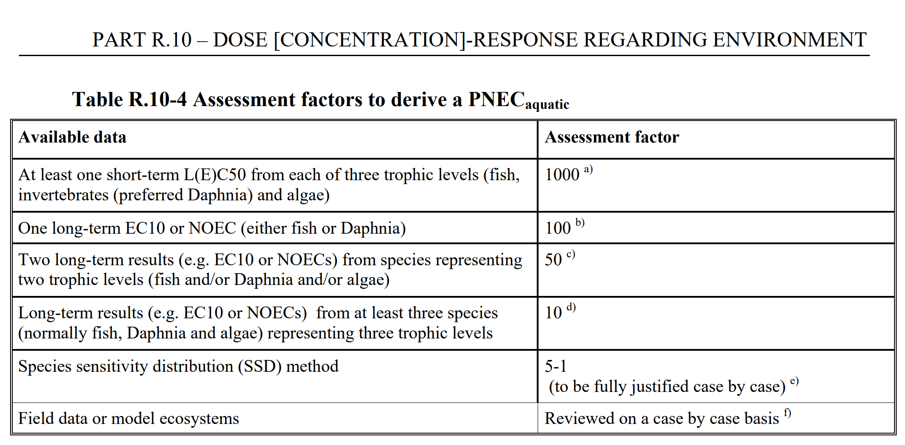
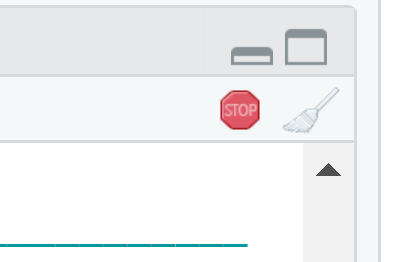
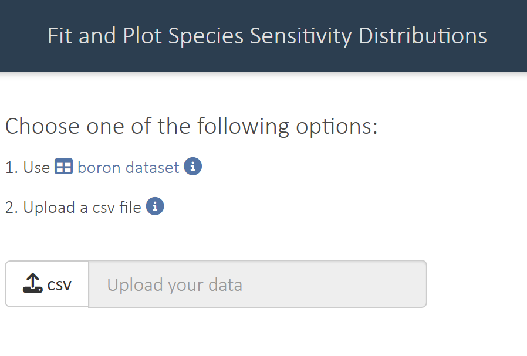
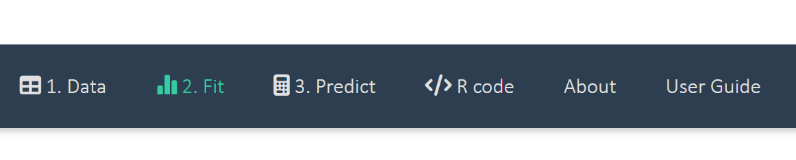
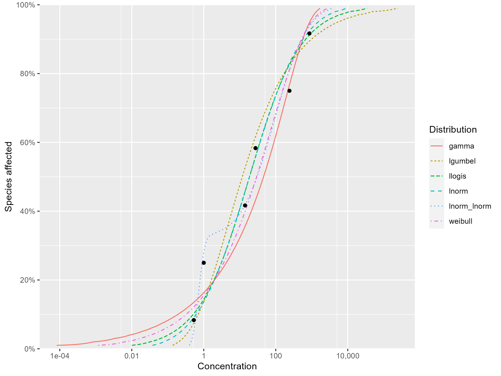
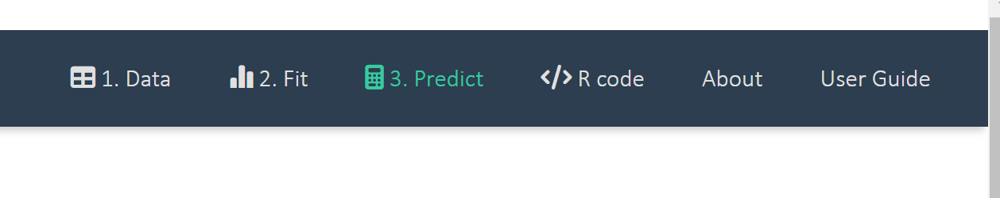
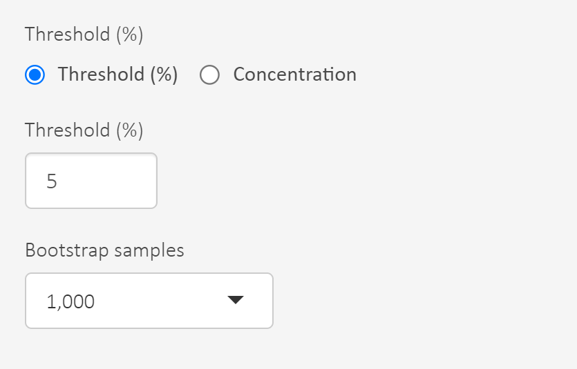
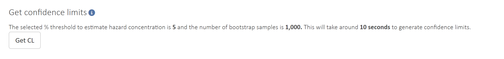
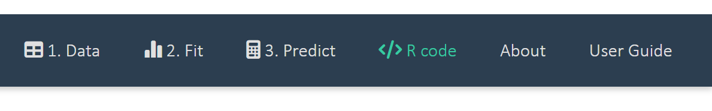

Exercise Hazard assessment using Species Sensitivity Distributions
MVEN10 Risk Assessment in Environment and Public Health
Exercise overview
Background
The Species Sensitivity Distribution methodology is a common way in hazard assessment for setting safe limits on chemical concentrations in freshwaters. It usually require experimentally determined NOEC values for a number of species from different taxonomic groups.
The species sensitivity distribution (SSD) is a statistical approach that is used to estimate either the concentration of a chemical that is hazardous to no more than x% of all species (the HCx) or the proportion of species potentially affected by a given concentration of a chemical.
The SSD approach follows a three-step procedure:
First, compile results from separate toxicity tests on a given chemical for various aquatic animal species.
Second, fit candidate probability distribution(s) to the data.
Third, use the fitted distribution(s) to infer a concentration that will be protective of a desired proportion of species in a hypothetical aquatic community.
There are several SSDs tools available for risk assessors.
If a SSD cannot be applied (which is usually the case), the hazard assessment is performed using assessment factors, where the general principle is to divide the result from a laboratory test by an appropriate assessment factor. The table below is taken from ECHAs dose response guidance, go to the original document to read more about this.

Purpose
To apply the SSD approach to find a hazardous concentration
To explore one of the many tools for SSD, namely the R-package ssdtools, in which the modelling can be done in an user friendly Shiny app
To compare with a situation of a SSD with more data, and with a situation of less data and the use of assessment factors
Content
- Find hazardous concentration by SSD modelling bases on dose-response data on the chemical metolachlor
Duration
90 minutes
Reporting
Write a report using a quarto document and upload it on the assignment in canvas.
- Use the following information in the YAML (i.e. the top information in a .qmd document)
title: “Hazard assessment using Species Sensitivity Distributions”
subtitle: “Report”
author: “Your name”
date: today
format:
html:
toc: true
code-fold: true
message: false
warning: false
embed-resources: true- You will explore the SSD approach using an app. Note that it is possible to get the full R-code for the SSD modelling. You can use this R-code to generate your report.
Tip
I recommend you copy on the whole code into an R-chunk and then divide the chunk into multiple chunks. This allows you to have better control of the output from each chunk.
Note that you cannot open the shinyapp in a qmd that is being rendered. An alternative to remove it is to put a # in front of the command
Sometimes you get messages or warnings when running a code. These might or might not be important. I judge the messages Ive seen on your computer as not important. You can suppress a message or warning by typing #| warning: false and #| message: false in the first row directly after the curly bracket in the R-chunk.
If you just want to look at your data you can e.g. open it in Excel. When your data is a csv-file, I recommend you open an empty Excel-file, got to Data>Get data>From File>From Text/CSV and follow the instructions.
References
ECHA Guidance on dose response modelling
Fox, D.R., van Dam, R.A., Fisher, R., Batley, G.E., Tillmanns, A.R., Thorley, J., Schwarz, C.J., Spry, D.J. and McTavish, K. (2021), Recent Developments in Species Sensitivity Distribution Modeling. Environ Toxicol Chem, 40: 293-308. https://doi.org/10.1002/etc.4925
The shinyssdtools developed for the British Columbia Ministry of Environment and Climate Change Strategy. https://github.com/bcgov/shinyssdtools
Get SSD data
Download a ssd data set.
This data set consists of cronic EC10 or LOEC values from exposure to the substance metolachlor for six different species in an aquatic system. This data is a selection from a bigger data set on 21 species.
A tool for Species Sensitivity Distributions
- Install and open the SSD tool.
These commands will install a R-package, load it into R and then open a shinyapp.
devtools::install_github("bcgov/shinyssdtools")
library(shinyssdtools)
shinyssdtools::run_app()Loading required package: ssdtoolsWarning in checkMatrixPackageVersion(): Package version inconsistency detected.
TMB was built with Matrix version 1.5.4
Current Matrix version is 1.6.5
Please re-install 'TMB' from source using install.packages('TMB', type = 'source') or ask CRAN for a binary version of 'TMB' matching CRAN's 'Matrix' packagePlease replace the following in your scripts:
- `ssdtools::boron_data` with `ssddata::ccme_boron`
- `ssdtools::ccme_data` with `ssddata::ccme_data`- Choose to open the app in the browser.
Tip
Stop the shiny app by closing the webrower and click on the STOP-sign in the R-console

Run the app by the command
shinyssdtools::run_app()- Load the data metolachlor_ssd.csv to the app using option 2. Upload a csv file

Look at the data, what does it contain?
Go to tab 2. Fit

Study the goodness of fit measures and the visual fits between curves and data points, and select your top three best distributions. Write down the arguments why you choose these three distributions. 
- Go to to the tab predict

- Set the threshold that defines the hazardous concentration, e.g. 5% defines HC5. Use 5%!

- At this point you can read out HC5 for each model and the model average.
If we want to consider statistical errors there is an option to derive an uncertainty interval for the hazardous concentration and select its lower bound. Uncertainty intervals can be characterised by bootstrapping which is a method to sample with replacement from data, refit the model and do this many times.
Set the number of bootstrap samples. Use 1000 to avoid it taking too long time.
Click on the button CL to start the bootstrapping (this will take some time)

Take note of the lower bound (lcl)of the uncertainty interval for the hazardous concentration corresponding to protection of at least 95% of the population.
Download the R-code for the analysis you did and put it into the report.

- Render the document. Note that you might have to change the path to data.
Write in the report:
The three distributions that were chosen and the justification for this choice.
A lower bound for the concentration of metolachlor that is hazardous to no more than 5% of all species in an aquatic system.
Compare to the numbers 0.72 and 0.107 - this is the model average and lower uncertainty bound from a SSD using the full data set of 21 species
Compare to a hazardous concentration derived from two species and an appropriate assessment factor. Select two species from your data and select the assessment factor from the table in the beginning of this document.
- Submit on the assignment in canvas